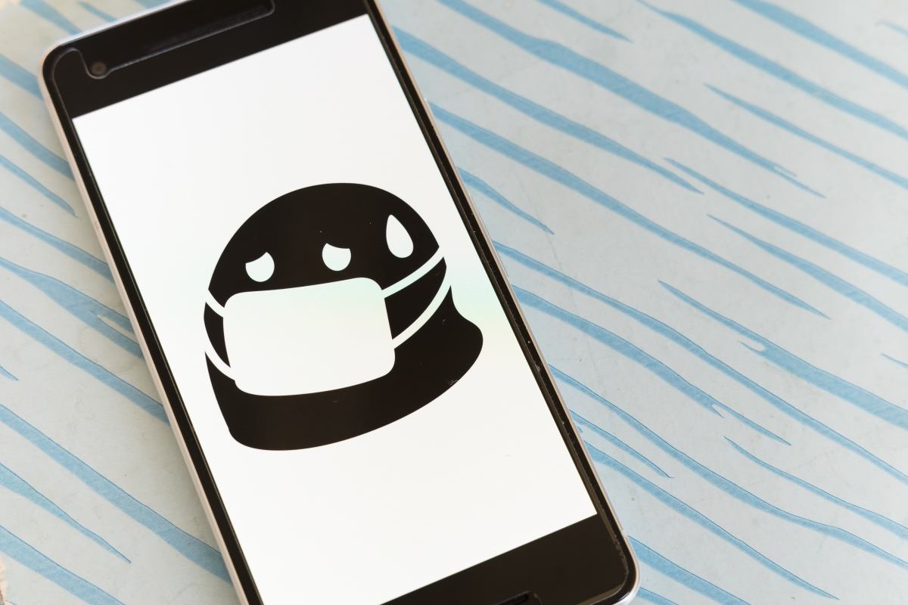

Blog 1
The Helpful Websites You Should Be Bookmarking When Learning Code
Date Posted: 2nd March 2022 | My must have websites that will help you along your journey, what they are and why you should have them.
Blog 2
How To Not Burn Out When Entering Web Development
Date Posted: 1st March 2022 | Guidance on when you should be taking breaks and saying no. How to break your focus and switch off.

Blog 3
The Humour Behind Web Dev Memes
Date Posted: 5th Feb 2022 | Everyone loves a meme, but what makes the theme of a Website Development meme so popular?